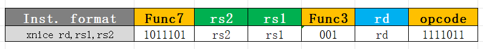

Tutorial for Adding Custom Assembly Instructions in binutils¶
The following examples all use 32-bit instructions.
Recognizing the Custom Extension Name¶
The following uses the xnice extension as an example.
File: bfd\elfxx-riscv.c
riscv_supported_vendor_x_ext[] function:
static struct riscv_supported_ext riscv_supported_vendor_x_ext[] ={
{"xnice", ISA_SPEC_CLASS_DRAFT, 1, 0, 0},
}
Tips: This function is responsible for adding the extension name and version number, where the first two values 1,0 are the extension's version number.
riscv_multi_subset_supports function:
/* Each instuction is belonged to an instruction class INSN_CLASS_*.
Call riscv_subset_supports to make sure if the instuction is valid. */
bool
riscv_multi_subset_supports (riscv_parse_subset_t *rps,
enum riscv_insn_class insn_class)
{
switch (insn_class)
{
case INSN_CLASS_XNICE:
return riscv_subset_supports (rps, "xnice");
}
}
Tips: The content to be added goes inside the switch statement, establishing the association between INSN_CLASS_XNICE, which corresponds to the instructions of the added xnice extension, and the xnice extension itself.
riscv_implicit_subsets[] function: (optional)
/* Please added in order since this table is only run once time. */
static struct riscv_implicit_subset riscv_implicit_subsets[] ={
{"xnice", "+zve32x", check_implicit_always},
}
Tips: This function controls whether the custom xnice extension depends on other extensions. If there are no dependencies, nothing needs to be added. Assuming it depends on the zve32x extension, you need to add the dependency in the format shown above within this function. If it depends on multiple extensions, continue adding them after the zve32x extension.
File include\opcode\riscv.h
enum riscv_insn_class
{
INSN_CLASS_XNICE,
}
Tips: This file is mainly responsible for declaring INSN_CLASS_XNICE in the riscv_insn_class enumeration.
Recognizing Custom Assembly Instructions¶
The following uses adding a standard R-type nice instruction as an example.
- Add the instruction encoding
Assume the assembly format of this nice instruction is nice rd, rs1, rs2, and it uses the encoding space of the RISC-V reserved custom3 region. Its encoding is:

- Generate the
opcodemacros required by the compiler (it is recommended to use theriscv-opcodesrepository at https://github.com/riscv/riscv-opcodes/tree/master)
git clone https://github.com/riscv/riscv-opcodes.git
cd riscv-opcodes/extensions/unratified/
vim rv_xnice //在该文件夹下创建xnice扩展指令文件(文件名规则是rv_name)，并根据指令模板添加一条指令
nice rd rs1 rs2 31..25=0x5D 14..12=1 6..2=0x1E 1..0=3 //此为需要添加的指令
cd ../../
make EXTENSIONS='unratified/rv_xnice'
After the above steps, the opcode macros are obtained in the riscv-opcodes/encoding.out.h file, as shown below:
#define MATCH_NICE 0xba00107b
#define MASK_NICE 0xfe00707f
Note: You can also generate the macros manually based on the encoding. The rule is: for the encoding of MATCH_NICE, all undefined bit positions are 0 and the remaining positions stay unchanged. For the encoding of MASK_NICE, all undefined bit positions are 0 and all remaining positions are 1.
-
In the
include\opcode\riscv-opc.hfile, add the macros generated above. -
Add the association between the extension and the extension's instruction encodings
File: opcodes\riscv-opc.c
riscv_opcodes[] function:
const struct riscv_opcode riscv_opcodes[] =
{
/* name, xlen, isa, operands, match, mask, match_func, pinfo. */
{"xnice", 0, INSN_CLASS_XNICE, "d,s,t", MATCH_XNICE, MASK_XNICE, match_opcode, 0 },
}
Tips: The first 0 means this instruction has no xlen requirement. d,s,t correspond to rd,rs1,rs2 respectively; the corresponding mapping relationships can be found in the validate_riscv_insn function in the gas/config/tc-riscv.c file.
Usage Instructions¶
When using it, pass xnice to the compiler through the -march option, for example -march=rv32imafdc_xnice.
References:¶
Modifying binutils to add assembly instructions on RISC-V:
https://blog.cyyself.name/add-compile-instr-for-riscv/
Extension recognition and assembly implementation of Nuclei custom VPU instructions:
https://github.com/riscv-mcu/riscv-binutils-gdb/commit/c8806f4bd8c1a1673ec61ad3badfc3d490fa52f7